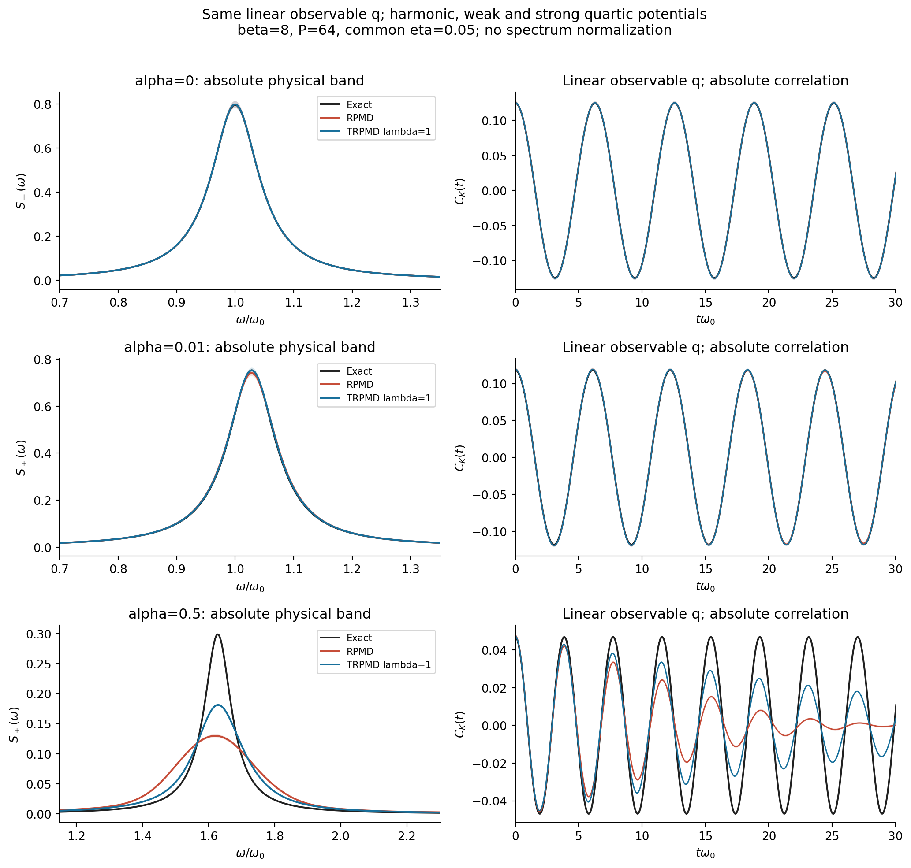
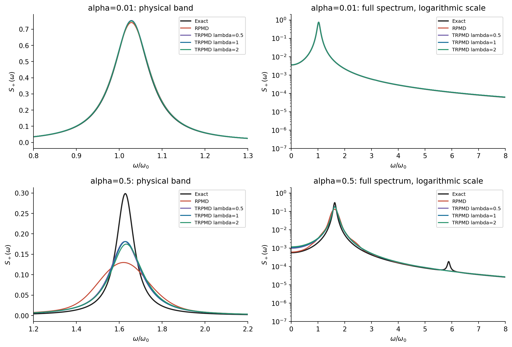
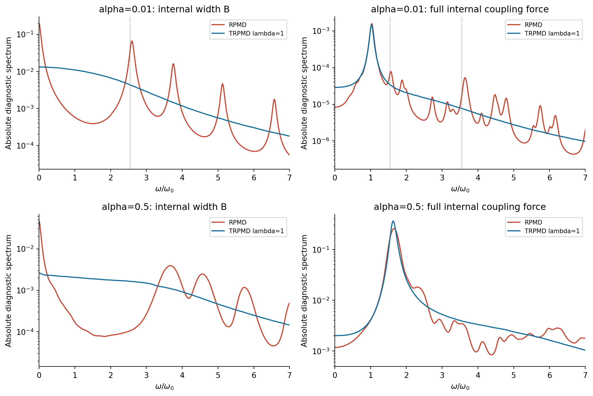
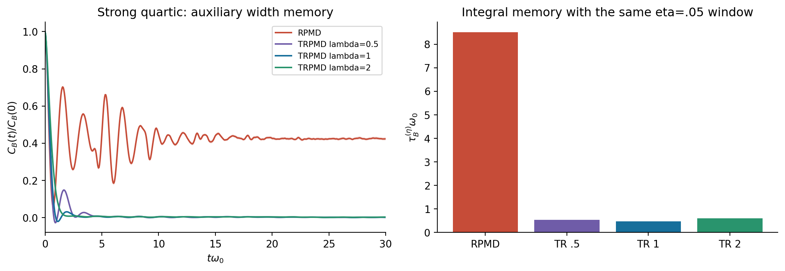
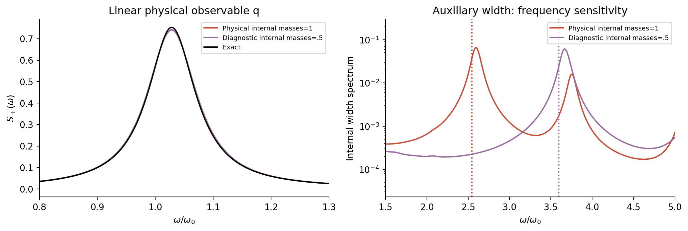
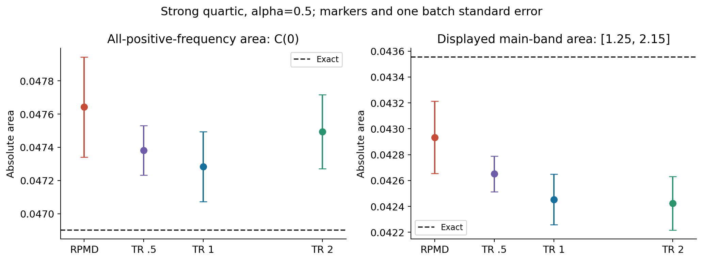
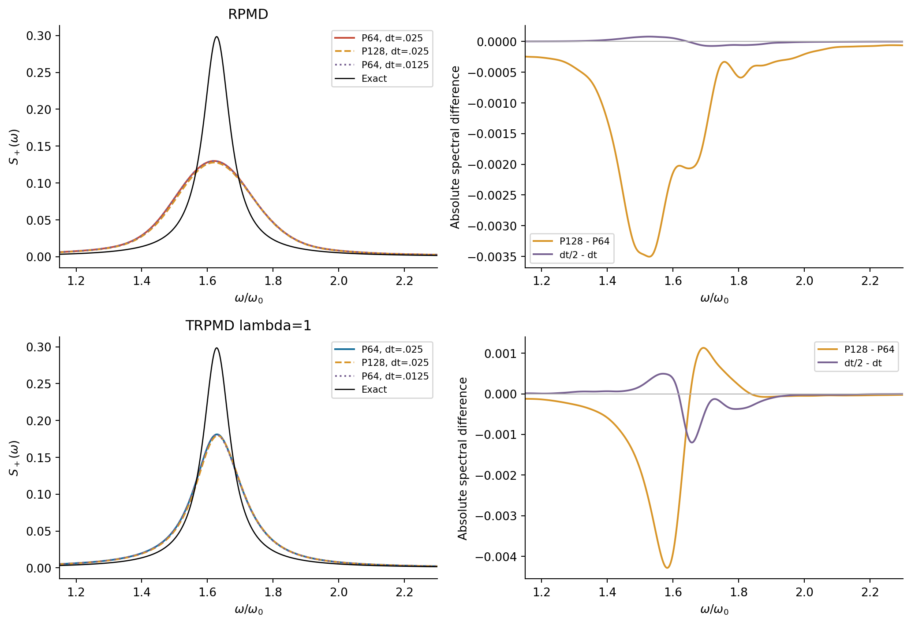

PIMD Series - Part VIII
Anharmonic Spectra and Partial Repair
Part VII exposed auxiliary ring-polymer lines by keeping the potential harmonic and measuring \(q^2\). This article reverses the control: the observable stays linear, \(A=q\), while a positive quartic term makes the potential anharmonic. The main RPMD error now appears as excessive broadening of a physical band. An internal-mode thermostat partly repairs that band, even though it makes the internal modes themselves lose memory faster.
1. One coordinate is enough
The question is whether TRPMD can help when nonlinearity enters the force rather than the measured observable. A single physical coordinate is sufficient. Its path-integral representation already contains a centroid and internal imaginary-time modes; a second physical vibration is unnecessary for the coupling examined here.
The model is a bound quantum particle, which can be interpreted as a nuclear vibrational coordinate:
There are no electronic degrees of freedom. References to a ground state, an excited state, or an energy level below mean vibrational states of this particle. The spatial wavefunction solves the one-dimensional Schrödinger equation for this potential.
Three objects must remain distinct throughout the comparison. A quantum vibrational transition supplies a physical frequency. An internal ring-polymer mode is an auxiliary coordinate used to represent the quantum equilibrium distribution. An observed decay of the centroid correlation measures loss of memory; it does not by itself establish loss of the total ring-polymer energy.
2. Two different ways to obtain a wrong spectrum
In the harmonic \(q^2\) test, the observable directly contains squared internal coordinates. Their auxiliary frequencies therefore appear as identifiable false spectral lines. For a linear observable, the ring estimator is just the centroid. In a harmonic potential the internal modes decouple from it, explaining the exact linear-position benchmark in Part V.
An anharmonic force changes this situation. Different classical ring trajectories can give the centroid different instantaneous frequencies, through both its amplitude and its internal ring configuration. A spread of frequencies gradually cancels in an ensemble correlation. The corresponding spectral weight occupies a band instead of remaining concentrated in a narrow line.
Thus the diagnostic here is excessive dephasing and broadening, rather than a requirement to find a separate false peak for every internal mode. The low-temperature exact reference is especially useful: almost all its position-correlation weight belongs to a single vibrational transition.
3. From vibrational levels to the exact spectrum
Let \(H|n\rangle=E_n|n\rangle\), \(p_n=e^{-\beta E_n}/Z\), and \(q_{nm}=\langle n|q|m\rangle\). The connected Kubo correlation is
The even potential has \(\langle q\rangle=0\). Inserting energy eigenstates and combining the two directions of each transition gives
A spectral frequency is an energy difference divided by \(\hbar\), not the energy of one level. It comes from the relative time phase of two eigenstates. The transition language labels terms in an equilibrium correlation; no electronic excitation or trajectory hopping is being simulated.
For the simple harmonic oscillator (SHO),
Position connects only adjacent vibrational levels. Every allowed adjacent gap is the same, so all thermally occupied transitions coincide at \(\omega_0\). Their Kubo weights sum to
The \(2\omega_0\) line in Part VII came from the different observable \(q^2\), which also connects levels separated by two quanta. Changing the observable changes which gaps are visible, even for the same Hamiltonian.
What a positive quartic term changes
The quartic term raises higher vibrational levels more strongly and changes the position matrix elements. In reduced units \(m=\hbar=\omega_0=1\), first-order perturbation theory gives
The main line therefore moves to higher frequency. Although \(V''(0)=1\) remains unchanged, the quantum wavefunctions extend beyond the origin and sample the quartic potential. The infinitesimal classical frequency at the potential minimum is not the finite quantum energy gap.
At low temperature the dominant coefficient is approximately
Stronger confinement reduces the position matrix element, while the larger gap adds a second reduction through the Kubo denominator. This explains the lower exact peak without invoking a shorter quantum lifetime. Anharmonicity also allows weak odd-parity overtones such as \(0\leftrightarrow3\); high-frequency structure is not automatically an auxiliary artifact.
The common observation window
The plotted quantity is the absolute one-sided angular-frequency spectrum
A term \(a\cos(\Omega t)\) contributes
The isolated bound quantum system has discrete delta lines before this window is applied. The displayed main-line width is approximately \(2\eta\). Parity makes every \(q_{nn}\) vanish, hence \(D=0\); the small displayed value near zero frequency is a broadened tail, not a zero-frequency delta. This differs from the diagonal connected contribution for \(q^2\) in Part VII.
4. What is physical about centroid–internal-mode coupling?
Write the beads as \(q_j=c+\delta_j\), with \(\sum_j\delta_j=0\), and define
Here \(B\) is the width within one ring, not the variance of centroids across the ensemble. Expanding the quartic energy exposes the coupling:
These cross terms belong to the path-integral equilibrium distribution. Deleting them would change the statistical model. Both the mean width and its fluctuations contribute to the representation of quantum equilibrium; it is incorrect to classify the mean as physical and every fluctuation as fake.
RPMD gives the ring a classical Hamiltonian real-time evolution. Averaging its bead forces cancels the springs and gives, in reduced units,
This identity is exact within the RPMD equations. It does not establish that their \(B(t)\) and \(T_3(t)\) have exact quantum time correlations. Imaginary-time beads are not additional physical particles. Their chosen classical motion is the dynamical approximation, even when their equilibrium distribution is well converged [2].
A useful control changes the internal masses while preserving the centroid mass and the canonical configuration distribution. The auxiliary frequencies change, while the physical quantum Hamiltonian does not. This distinguishes equilibrium information from a specific auxiliary real-time prescription.
Why a conservative calculation can lose correlation
Even one classical quartic oscillator has an amplitude-dependent frequency. A weak-anharmonicity estimate is \(\omega(A)\simeq1+3\alpha A^2/2\). Independent thermal amplitudes therefore give a frequency spread. Internal widths add another frequency modulation through the centroid equation. After averaging over initial phase, a trajectory contributes approximately \(A_i^2\cos(\omega_it)/2\); different frequencies progressively cancel.
This is loss of phase coherence in an ensemble, not necessarily shrinking motion on every trajectory. The centroid can exchange energy with the internal modes, while the complete RPMD ring Hamiltonian is conserved. Its continuous classical trajectory energies should not be identified with the discrete vibrational levels of the exact quantum particle.
Why faster internal forgetting can help
TRPMD applies friction and matching noise to internal modes, leaving the centroid directly unthermostatted. It preserves the same canonical ring distribution in continuous time, while changing its temporal correlations [1], [2]. A slowly varying width can keep one centroid systematically fast and another systematically slow. Faster changes of that width let their frequency biases partly average away.
A simple phase model makes the distinction explicit. If \(\delta\omega(t)\) is a frequency deviation, its accumulated phase is
A frozen random offset gives phase variance proportional to \(t^2\). In a model of independent offsets renewed every \(\tau\), it grows as \(\tau t\) for \(t\gg\tau\). Similar instantaneous fluctuation amplitudes can therefore produce less phase dispersion when their memory is shorter. This is a motional-averaging illustration, not a fitted linewidth formula for the strong quartic model. The thermostat can also perturb the centroid through the same anharmonic coupling, so larger friction is not guaranteed to help.
5. Calculation and estimators
| Control | Values and conventions |
|---|---|
| Model and temperature | \(m=\hbar=\omega_0=1\), \(\beta=8\), \(\alpha=0,0.01,0.5\); connected \(A=q\). |
| Main discretization | \(P=64\), \(\Delta t=0.025\), duration 200; output interval 0.05. |
| Thermostat | \(\gamma_k=2\lambda\omega_{s,k}\), \(\gamma_0=0\); \(\lambda=0,0.5,1,2\). Main TRPMD comparison: \(\lambda=1\). |
| Spring frequencies | \(\omega_{s,k}=2P\sin(\pi k/P)/(\beta\hbar)\); physical normal-mode masses, except the separately labelled mass control. |
| Spectrum | Common \(\eta=0.05\), angular-frequency grid 0–8 at spacing 0.002; absolute intensity, no area normalization or clipping. |
| Sampling | 16 independent batches of 512 paths per case. Strong-anharmonic RPMD main and refinement cases each add 16 independent batches. |
| Refinements | Strong \(\alpha=0.5\), \(\lambda=0,1\): \(P=128\) and \(\Delta t=0.0125\); shorter output-interval checks at \(P=128\). |
| Quantum reference | Projected physical operators in 80, 120, 180 SHO basis states; exact eigenstate Kubo sum and an independent finite-field static response check. |
The canonical coordinate weight is \(e^{-\beta_PU_P}\), with \(\beta_P=\beta/P\) and the ring potential
Independent harmonic-ring Gaussian proposals are accepted with probability
This produces independent equilibrium rings, with independent canonical momenta. Methods at the same potential and bead number share initial rings for paired comparisons. The production splitting is a nonlinear half-kick, an exact harmonic-plus-spring Langevin transition, and a second nonlinear half-kick. The full quartic propagator still has finite-step error.
For linear position, \(A_P=c\). Every independent trajectory contributes an all-time-origin correlation; trajectories and then batches are weighted equally. Symmetry supplies the known mean \(\langle q\rangle=0\). Statistical error comes from independent batches, not from counting overlapping time origins as independent samples. Curves are not smoothed. The quantum spectra use the analytic windowed line sum; trajectory transforms end at 200, where the common exponential window is already small.
The reported relative spectral error integrates only over the shared displayed interval:
6. Computed spectra and controls














7. Reading the comparison
The exact line hardens and loses Kubo weight
Read the black curves down Figure 1. The main line moves to higher frequency, its area and height decrease, and the time correlation oscillates faster with a smaller amplitude. Its displayed width stays nearly fixed. At this low temperature a single gap dominates, so there is little visible decay of its oscillatory envelope.
The exact fundamental frequencies are 1, 1.02839, and 1.62823. In the strongest well, \(|q_{01}|^2\) falls from the harmonic value 0.5 to about 0.3053. Combined with the larger gap in the Kubo denominator, the dominant weight becomes about 37.5% of its harmonic value. This is a reduction in static response and transition weight, rather than broadening caused by an environment.
Anharmonic energy spacings are unequal, but the excited-state thermal probabilities here are tiny. The strong-well \(0\leftrightarrow1\) term carries more than 99.95% of the exact Kubo area. At higher temperature, more gaps could contribute and the exact time correlation could itself exhibit beating or apparent decay. The nearly single-frequency reference is a property of this calculation, not a general assertion that quantum correlations never decay.
The dominant RPMD error is excessive broadening
At zero anharmonicity, the two trajectory methods coincide because the centroid is decoupled. Weak anharmonicity produces a small departure; no isolated false position line is resolved. In the strong well the red time correlation loses coherence much faster than black, and its spectral band becomes broad and low.
Its peak position and total area remain near the reference. The error is principally a wrong allocation of weight across frequencies around the physical band, rather than simply a displaced peak or missing total fluctuation strength. Even conservative trajectories can generate this excessive dephasing. The data do not identify how much comes from centroid amplitude dependence and how much from auxiliary internal dynamics; calling every part of the broad band one particular fake mode would overstate the decomposition.
Partial repair is supported statistically
The blue strong-well correlation retains an oscillatory envelope longer than red, and its main band is correspondingly narrower. It still decays faster than the exact correlation. Figure 2 shows a broad useful friction range rather than a universal optimum; the highest tested friction worsens the strong-well band slightly.
Paired bootstrap resampling of the original 16 batches gives a 95% interval of [0.0488, 0.0552] for the strong-well peak-height increase and [0.1094, 0.1207] for the FWHM reduction. The spectral-error reduction interval is [0.1875, 0.2069]. The plotted RPMD center also includes an independent sampling extension; those extra batches are not silently treated as paired. Weak-well improvements are smaller but also resolved in the paired comparison.
Auxiliary structure and long memory provide a mechanism
Figure 3 makes internal oscillatory structures visible even where Figure 1 does not resolve separate physical-position sidebands. In the weak harmonic approximation, \(\Omega_k=\sqrt{1+\omega_{s,k}^2}\); a squared internal coordinate contains \(2\Omega_k\), and multiplication by an oscillating centroid gives combinations \(|2\Omega_k\pm1|\). Anharmonic shifts and the additional \(T_3\) force prevent this simple estimate from being a quantitative strong-well line table.
The mass control in Figure 5 moves the internal-width peak while leaving the physical model unchanged. It establishes the auxiliary identity of this feature. Its physical-position effect is small in the weak well, so it does not explain the entire strong-well error by itself.
Figure 4 shows the more relevant strong-well change: internal width fluctuations remain similar in size, but their persistent memory is removed. Through the centroid force, this change can reduce slowly accumulated frequency offsets. Faster internal forgetting is therefore compatible with slower loss of centroid coherence. This is evidence for a motional-averaging interpretation, not a unique quantitative causal decomposition of the linewidth.
The RPMD width correlation retains a substantial late plateau. Its window integral is consequently dominated by approximately that plateau divided by \(\eta\). It cannot be inserted as an ordinary correlation time into a weak-noise linewidth formula. Width correlations also use a same-batch estimate of their mean; small residual zero-frequency differences should not be interpreted as exact physical suppression.
A taller peak need not have more area
With the stated transform,
RPMD and TRPMD share the same canonical configuration distribution, so their total areas agree in the ensemble and continuous-time limit. Finite samples and finite steps give slightly different estimates, as Figure 6 shows. The position Kubo covariance is a static response measure, \(C_K(0)=\chi_{qq}/\beta\), rather than the ordinary quantum variance \(\langle q^2\rangle\).
The repaired peak becomes taller mainly because the line shape changes. The fixed main-band area does not improve along with its height. Nor does the independent-mode area rule from Part VII carry over: these anharmonic modes interact, and the linear observable is the centroid. There is no separately conserved spectral area for each internal mode's contribution to this physical position band.
The observed repair exceeds checked numerical changes
Figure 7 supports the comparison at the tested finite bead numbers and steps. The bead differences meet the predeclared 3% spectral criterion, with integrated pointwise standard-error scales of about 1.68% and 0.86%; the comparison is still limited at the percent level by sampling. Halving the output interval at \(P=128\) changes the shared-band spectra by less than 0.0041%.
The exact basis refinement and finite-field checks control the quantum reference, and all final continuous curves passed the retained numerical and visual checks. Increasing the bead number refines imaginary-time statistics; it does not remove RPMD's chosen real-time approximation. The sizeable remaining method error is distinct from those discretization tests.
8. Conclusions and scope
- Anharmonicity exposes a dynamical error even for linear position. In this low-temperature quartic well, RPMD spreads an almost single-transition quantum band over too broad a frequency range. Excessive dephasing is the principal observed discrepancy.
- TRPMD partly repairs the band by changing auxiliary time correlations. Preserved width fluctuations, reduced internal long memory, and a narrower physical band support a motional-averaging mechanism. They do not establish that all anharmonic error is caused by one fake mode.
- Static coupling and approximate motion must be distinguished. Centroid–internal correlations belong to the quantum equilibrium representation. Assigning those auxiliary coordinates classical real-time dynamics is the approximation. TRPMD keeps the former while modifying the latter.
The remaining width and height errors are substantial. The thermostat does not restore discrete quantum dynamics or guarantee an optimal friction for other potentials and observables. This benchmark is a one-dimensional bound quartic model with a linear position readout and a common artificial observation window; it supplies neither a physical bath lifetime nor an infinite-bead exact-spectrum theorem.
Code and data
The source bundle contains the quantum solver, canonical sampler, C++ propagation kernel, simulation driver, analysis, and frozen model settings. The portable entry adapts file locations and library loading; the production numerical equations are retained. Building the kernel requires a C++17 compiler with OpenMP; the Python calculations use NumPy, SciPy, and Matplotlib. A small smoke run is an interface check, not the full published ensemble.
- Reproduction instructions and commands · source-only bundle.
- Quantum eigenstate reference · RPMD/TRPMD driver · C++ kernel · Sampling and transforms.
- Analysis and original six figures · Model and numerical protocol.
- All main absolute spectra and standard errors · Position correlations and standard errors.
- Width and internal-force spectra · Normalized width memory · Mass diagnostic · Refinement spectra.
- Peak, area, uncertainty and comparison metrics · Resolved quantum transitions and matrix elements · Figure 6 plotting script.
References
- M. Rossi, M. Ceriotti, and D. E. Manolopoulos, How to remove the spurious resonances from ring polymer molecular dynamics, J. Chem. Phys. 140, 234116 (2014). DOI; Author manuscript.
- T. J. H. Hele, How to obtain thermostatted ring polymer molecular dynamics from exact quantum dynamics and when to use it. Author manuscript.
The cited work motivates the method and its approximation structure. The quartic spectra and controls shown here are the present calculation, not digitized results from those papers. For molecular spectroscopy context, see the separate water TRPMD note.